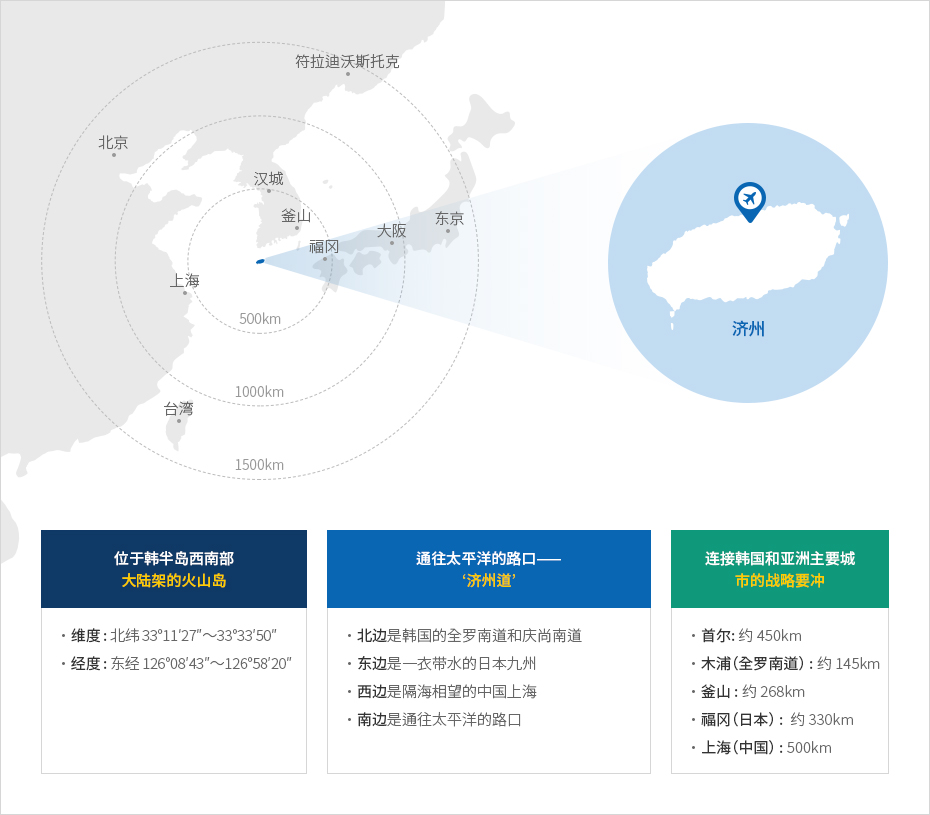

世界中的济州
- Home
- 基础情况
- 地理
- 世界中的济州
衔接韩国和东亚的战略据点


-
한반도 서남단에 위치한 대륙봉 화산섬
- 위도 : 북위 33°11′27″～33°33′50″
- 경도 : 동경 126°08′43″～126°58′20″
-
태평양으로 뻗어나가는 길목 ‘제주도’
- 북쪽으로는 대한민국의 전라남도와 경상남도
- 동쪽으로는 남해를 사이에 둔 일본의 규슈
- 서쪽으로는 동중국해를 사이에 둔 상하이
- 남쪽으로는 태평양으로 뻗어나가는 길목
-
대한민국과 아시아를 잇는 전략적 요충지
- 서울 : 약 450km
- 목포(전남) : 약 145km
- 부산 : 약 268km
- 후쿠오카(일본) : 약 330km
- 상하이 (중국) : 500km

- 济州岛是一座大陆架火山岛，位于韩半岛西南端以南90km处,
纬度为 北纬33°11'27"~33°33'50", 经度为东经126°08'43"~126°58'20′。 - 济州岛位于东亚三国的中间，北边是韩国的全罗南道和庆尚南道， 东边是一衣带水的日本九州长崎县，西边是隔海相望的中国上海。而且，南边是通往太平洋的路口，系连接东亚和世界的战略要冲。